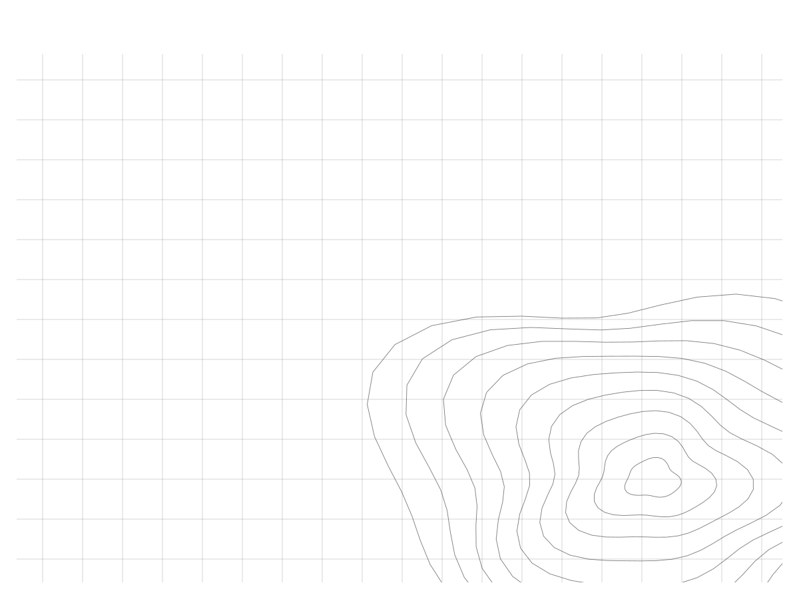
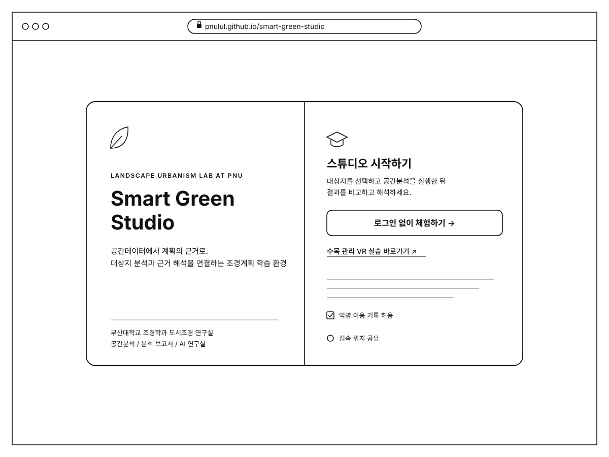
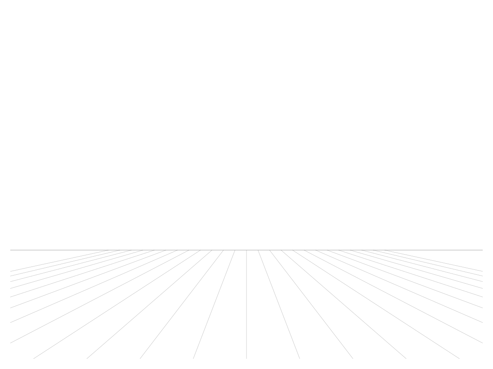
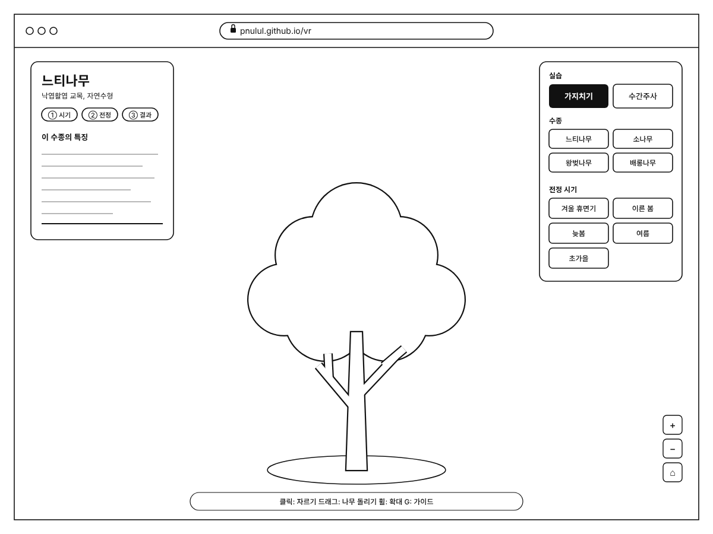
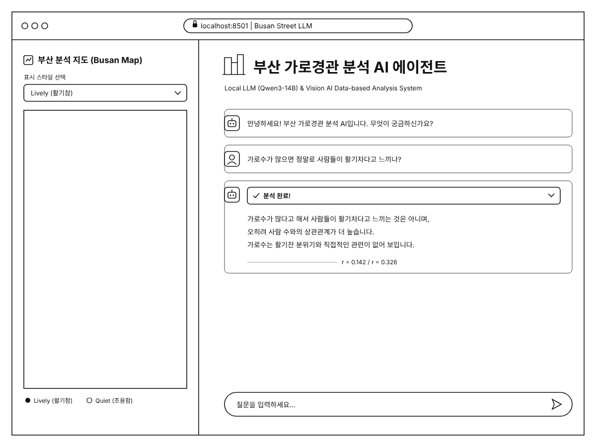
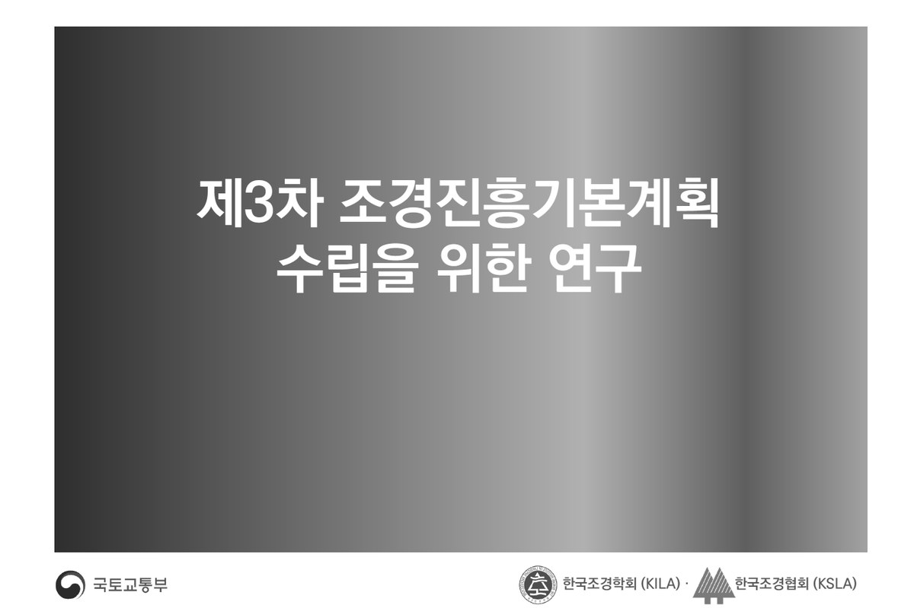
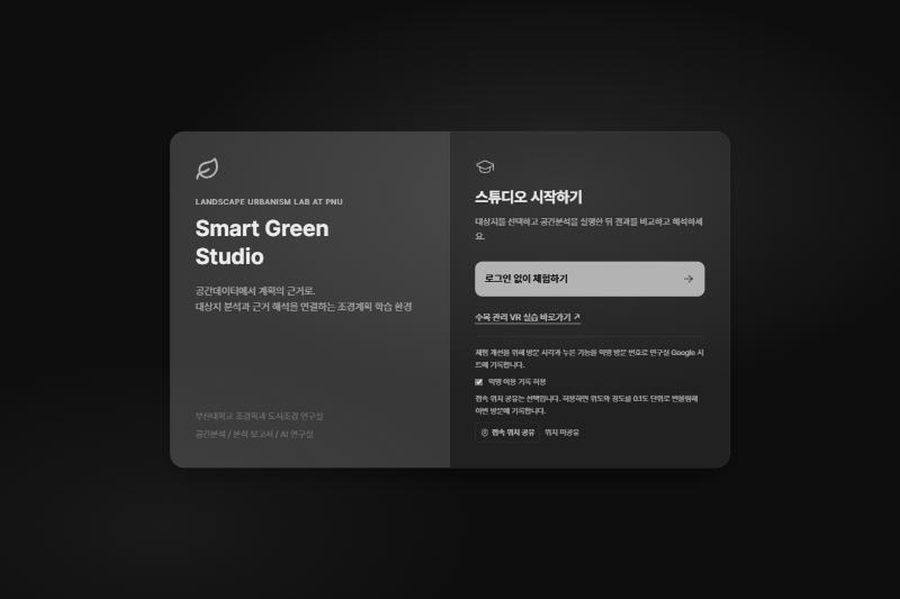
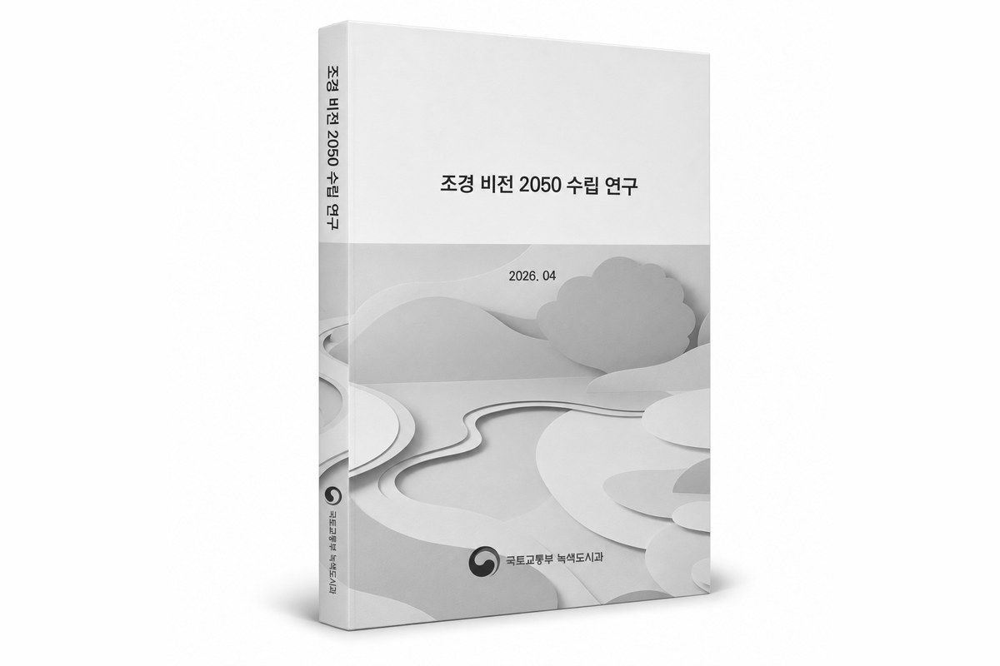
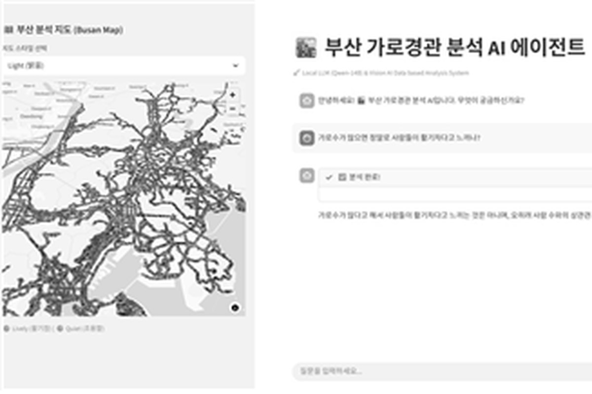

Smart Green Studio v2
사이트 분석부터 식재 결정까지 조경계획 전 과정을 함께하는 근거기반계획 AI 에이전트.
좌표나 행정동을 입력하면 지형과 수문, 기후, 토지이용, 녹지 구조 등 분석 지도를 출처와 함께 생성하고, 152종 수목 데이터베이스에서 사이트에 맞는 식재 팔레트를 추천합니다.


사이트 분석부터 식재 결정까지 조경계획 전 과정을 함께하는 근거기반계획 AI 에이전트.
좌표나 행정동을 입력하면 지형과 수문, 기후, 토지이용, 녹지 구조 등 분석 지도를 출처와 함께 생성하고, 152종 수목 데이터베이스에서 사이트에 맞는 식재 팔레트를 추천합니다.


수목 전지(가지치기)를 가상현실에서 연습하는 수목 관리 실습 VR.
웹 브라우저에서 바로 실행되며, 과제를 따라 나무를 살펴보고 확대, 축소하며 전지 실습을 진행합니다.


자연어 질문으로 부산의 가로경관을 분석하는 가로경관 평가 AI 에이전트.
부산 간선도로 37,167개 지점에서 수집한 148,668장의 스트리트뷰 이미지를 Vision AI로 분석해 녹시율, 천공률, 수목 수, 보행량, 활기참 데이터베이스를 구축하고, 로컬 LLM 에이전트가 자연어 질문을 데이터 연산으로 바꿔 답합니다. 외부 서버 없이 로컬 환경에서 작동합니다.

국토교통부 2026-2027

부산대학교 2026

국토교통부 2025-2026

한국연구재단 2024-2026